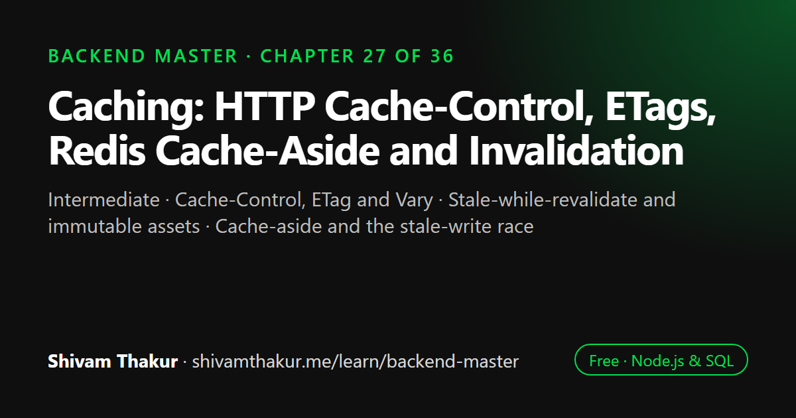

Chapter 27 of 36 · Intermediate
Caching: HTTP Cache-Control, ETags, Redis Cache-Aside and Invalidation
Caching — Doing Expensive Work Once

Caching trades freshness for speed and load reduction, and every cache is a copy that can drift. This chapter tests HTTP caching with validators and stale-while-revalidate through a small shared cache, measures a 78 times faster Redis hit, reproduces the stale-write race and fixes it with versioned keys, and compares eviction policies.
In this chapter you will learn
- Cache-Control, ETag and Vary
- Stale-while-revalidate and immutable assets
- Cache-aside and the stale-write race
- In-process versus Redis caches and invalidation
- Penetration, stampede, avalanche and eviction policies
27.0 Why This Chapter Matters
The fastest request is the one that never reaches your server. The cheapest database query is the one you never run. Caching is storing the result of expensive work so the next person who needs it gets it instantly, and it is the single most effective performance tool you have.
It is also famously where subtle, painful bugs live. Phil Karlton's joke ("there are only two hard things in computer science: cache invalidation and naming things") survives because it's true: every cache is a copy, and copies drift. Caching trades freshness for speed, and the engineering is in choosing how much staleness is acceptable for each piece of data, and in making sure the cache can never make things wrong, only slightly old.
Caching happens at many layers, and a request can be answered at any of them:
Browser cache → CDN / reverse proxy → Application (in-process) → Redis → Database → Disk
(0 ms, free) (10 ms, edge) (0.0001 ms) (1–2 ms) (3–100 ms)This chapter works from the outside in, and runs every claim:
- HTTP caching:
Cache-Control,ETag/304,Vary, immutable assets,stale-while-revalidate; tested against a small shared cache that behaves like a CDN. - Application caching: cache-aside, read-through, write-through, write-behind; measured speed-ups.
- Invalidation and consistency: the stale-write race reproduced, and fixed with versioned keys.
- Multi-instance caches: in-process incoherence and pub/sub invalidation.
- Cache failure modes: penetration, stampede, avalanche, hot keys.
- Eviction policies: LRU vs LFU simulated on realistic (Zipf) traffic.
- What not to cache, and the security hazards (cache poisoning and "web cache deception").
27.1 HTTP Caching: Let the Browser and CDN Do the Work
HTTP has caching built in (RFC 9111). The server describes how cacheable a response is; every cache along the path (the browser's private cache, corporate proxies, CDNs, reverse proxies) obeys.
27.1.1 Cache-Control: the main switch
| Directive | Meaning |
|---|---|
max-age=N |
Fresh for N seconds; serve from cache without asking the server |
s-maxage=N |
Like max-age but only for shared caches (CDNs) |
public |
Any cache may store it (even if it normally wouldn't, e.g., with auth) |
private |
Only the user's own browser may store it, never a CDN (personalised data!) |
no-store |
Don't store it anywhere (sensitive data) |
no-cache |
You may store it, but must revalidate with the server before every reuse |
must-revalidate |
Once stale, don't serve without revalidating |
immutable |
Won't change during its freshness lifetime: don't even revalidate on reload |
stale-while-revalidate=N |
After expiry, serve the stale copy for up to N more seconds while refreshing in the background |
stale-if-error=N |
Serve stale for N seconds if the origin errors (resilience, Ch 26) |
(A famously confusing naming trap: no-cache does not mean "don't cache"; it means "cache, but validate first." no-store means "don't cache.")
27.1.2 Validators: ETag and Last-Modified (the 304 trick)
When a cached copy expires, the cache doesn't have to download the body again. It asks: "has it changed?" using a validator:
- First response includes
ETag: "3a-q9zid6Y5D4sjHNBISZoNDDhwpr0"(a fingerprint of the content) and/orLast-Modified. - Later request:
If-None-Match: "3a-q9zid..."(orIf-Modified-Since). - If unchanged, the server answers
304 Not Modifiedwith no body; the cache reuses its copy and refreshes its freshness timer.
Tested straight against the origin:
first GET : 200 ETag "3a-q9zid6Y5D4sjHNBISZoNDDhwpr0" (58 bytes body)
If-None-Match : 304 (0 bytes body) <- 304 Not Modified: the client reuses its copy
after the data changed : 200 (58 bytes) new ETag "3a-bSK7fcEHjUp5bzdIM7Erj/TyDfc" <- validator no longer matchesExpress generates ETags automatically for res.send/res.json (a hash of the body; weak by default). It also revalidates If-None-Match for you (req.fresh). For a 58-byte JSON the saving is trivial; for a 2 MB catalogue response a 304 saves almost the whole transfer.
Two honest caveats. (1) 304 saves bandwidth, not server work, if the server still does the full query to compute the ETag. In my test the origin took 100 ms before answering, and the revalidation still took 112 ms (the output below). To save work, derive the validator cheaply (e.g., from the row's updated_at/version) before running the expensive query, then short-circuit with 304. (2) A gotcha I hit: Node's built-in fetch() adds Cache-Control: no-cache to conditional requests (the browser Fetch-spec behaviour), and Express treats that as "client wants a fresh copy" and never returns 304. My first test "failed" until I used http.get. Real browsers and CDNs send conditional requests correctly; just don't be misled when testing with fetch.
27.1.3 Through a shared cache
I wrote a small shared cache (what a CDN or reverse proxy like Varnish/nginx does: obey Cache-Control, Vary, validators, stale-while-revalidate; never store private/no-store/no-header responses) and put five differently-labelled endpoints behind it:
GET /static/app.9f8a7c.js (immutable, 1 year) 200 MISS 12 ms 9500 B
GET /static/app.9f8a7c.js again 200 HIT 2 ms 9500 B
GET /products/1 (max-age=0, must-revalidate) 200 MISS 114 ms 58 B
GET /products/1 again: revalidates 200 REVALIDATED (304 from origin, body reused) 112 ms 58 B
GET /me (private, no-store) 200 MISS 6 ms 24 B
GET /me again 200 MISS 4 ms 24 B
GET /search (no Cache-Control) 200 MISS 8 ms 34 B
GET /search again 200 MISS 3 ms 34 B
GET /lang Accept-Language: en 200 MISS
GET /lang Accept-Language: hi (Vary) 200 MISS (a *separate* cached copy)
GET /lang Accept-Language: en again 200 HIT
GET /lang Accept-Language: hi again 200 HIT
origin requests so far: 9What each line teaches:
- Versioned static assets (
app.9f8a7c.js) getmax-age=31536000, immutable(one year). The filename contains a content hash, so a new build gets a new URL: cache-busting by fingerprinting. This is the gold standard for JS/CSS/images/fonts: infinite caching, instant updates. max-age=0, must-revalidate+ ETag (the product): always checks, but cheaply (304). Good for data that must be fresh but is large.private, no-store(/me): never cached by the shared cache (correct: per-user data must not be shared, Chapter 22).- No
Cache-Controlat all (/search): our cache refused to store it. Real caches may apply heuristic freshness fromLast-Modified, which is why you should always send an explicit policy rather than rely on guesses. Vary: Accept-Languagecreated separate cache entries per language. WithoutVary, the first visitor's language would be served to everyone: a correctness bug.Varymultiplies cache entries, so vary only on headers that truly change the response (neverVary: Cookieon a public page, which makes it uncacheable; neverVary: User-Agent, whose values are endless).
27.1.4 stale-while-revalidate: fast and fresh
A user should never have to wait for a refresh. max-age=2, stale-while-revalidate=30 on an endpoint whose origin takes 200 ms:
t=0 s first request (cold) 200 MISS 217 ms
t=0 s second request 200 HIT 2 ms
t=2.3 s STALE: served instantly, refresh starts STALE (revalidating in background) 4 ms
t=2.7 s fresh again (refreshed in background) 200 HIT 11 ms
origin requests for the /feed sequence: 2 (4 client requests)After the data expired (t = 2.3 s) the user still got an answer in 4 ms; the cache refreshed in the background and the next request saw fresh data. Only the very first request ever pays the 200 ms. This is the best latency/freshness compromise for content that tolerates being seconds old (feeds, listings, dashboards), and it also shields the origin from stampedes (one refresh, not one per user; compare Chapter 19's stampede). Use stale-if-error for resilience.
Overall effect, 200 requests through the cache: 199 hits of 200, 1 origin request, 2.8 ms median.
27.1.5 What to put on which route
| Route type | Suggested headers |
|---|---|
Fingerprinted assets (/assets/app.9f8a7c.js) |
public, max-age=31536000, immutable |
Public, slowly changing API/HTML (/products, /categories) |
public, max-age=60, stale-while-revalidate=300 (+ ETag) |
Public but must be fresh (/products/:id price) |
public, max-age=0, must-revalidate + cheap ETag, or short s-maxage |
Personalised (/me, cart, orders) |
private, no-store (or private, max-age=0) |
| Authenticated API responses | Default to private, no-store; cache deliberately and only per user |
| Sensitive (tokens, PII, payment) | no-store |
| POST/PUT/DELETE | Not cached (but they should invalidate related cached GETs, e.g., via Location/purge) |
Also: never cache error responses long (a 500 cached for an hour is an outage that outlives the bug; use short or no caching for 5xx), and put the CDN purge/invalidation (tag- or URL-based) in your deploy and update flows. (CDN purge APIs described, not run.)
27.2 Application Caching Patterns
Past HTTP, your code decides what to keep in memory or Redis.
27.2.1 The four patterns
| Pattern | How it works | Use when | Risk |
|---|---|---|---|
| Cache-aside (lazy loading) | App reads cache; on miss loads from DB and fills cache; on write updates DB then invalidates | The default for reads | Stale races (§27.3), stampedes |
| Read-through | The cache layer itself loads on miss (a library/service does the DB call) | Cleaner code; same semantics as cache-aside | Needs a loader abstraction |
| Write-through | Writes go to cache and DB together | Read-after-write consistency matters | Two writes to keep consistent; cache polluted with unread data |
| Write-behind (write-back) | Write to cache, flush to DB later asynchronously | Very write-heavy, tolerant of loss | Data loss on crash; ordering; complexity |
| Refresh-ahead | Refresh hot entries before they expire | Predictable hot keys | Wasted refreshes of cold keys |
Cache-aside is the right default, and the one that Chapter 19 implemented.
27.2.2 What a cache hit is worth
A realistic expensive query: revenue grouped by status across 1,000,000 orders (Chapter 15's table):
database (cache miss) median 126 ms | Redis (cache hit) median 1.63 ms | speed-up ≈ 78x78× faster, and, as important, the database wasn't touched. A cache doesn't just reduce latency; it removes load. If 1,000 users view a dashboard per minute and its numbers can be 60 s old, that's 1 query instead of 1,000.
27.2.3 Where to cache: memory vs Redis vs database
in-process LRU ~110 ns/op | Redis GET ~2,559 µs/op | PostgreSQL primary-key lookup ~2,983 µs/op(≈ 23,000× between process memory and Redis on this machine; the ~2.5 ms Redis figure is a Docker-on-Windows network round trip: on a real network it's typically 0.2–1 ms.) The ranking matters more than the numbers:
- In-process (L1): nanoseconds, no network, but per-instance (each server has its own copy; memory is limited; lost on restart) → ideal for small, hot, rarely-changing data (config, feature flags, category tree).
- Redis (L2): shared by every instance, survives app restarts, millisecond cost → the default for shared caches.
- Both (L1 + L2): check memory, then Redis, then DB. Fastest, but two layers to invalidate (§27.4).
- A PK lookup against PostgreSQL costs about the same as a Redis
GETover the same network path; caching a trivial indexed lookup in Redis often buys little (and adds staleness). Cache expensive things: aggregates, joins, remote API calls, rendered fragments, results of CPU-heavy work.
27.3 Invalidation: The Hard Part
27.3.1 Strategies
| Strategy | How | Consistency | Notes |
|---|---|---|---|
| TTL only | Entries expire on their own | Stale up to the TTL | Simplest; pick TTL = tolerable staleness |
| Invalidate on write | DEL key after updating the DB |
Fresh on the next read (but see the race) | Needs every writer to know the keys |
| Update on write (write-through) | Write new value to cache | Read-your-writes | Races between concurrent writers |
| Versioned keys | Include a version in the key; writers bump the version | Stale entries are simply never read | Extra version lookup; garbage collected by TTL |
| Event-driven | Publish change events; subscribers invalidate (Ch 28/29) | Eventual, fast | Infrastructure |
Always combine invalidation with a TTL as a safety net: bugs and missed invalidations then self-heal.
27.3.2 The stale-write race, reproduced
"Invalidate on write" looks airtight. It isn't. We forced the interleaving that happens naturally under load:
- Reader A misses the cache, reads the old row (price 12000) from the database, then is delayed (a GC pause, a slow network hop, a busy event loop: here 150 ms).
- Writer B updates the database (price 9900) and deletes the cache key. Correct so far.
- Reader A wakes and writes its old value into the cache.
database says price 9900, cache says 12000 <- STALE until the TTL (300 s) expires, even though we invalidated on writeThe cache is now wrong for five minutes, though every individual step followed "the rules." (This race is rare per request but certain at scale.)
The fix: version-stamped keys
Readers learn the current version first, and only ever write under the version they started with. A late writer fills an old key that no one reads anymore.
async function getProduct(id) {
const ver = await redis.get(`ver:product:${id}`); // 1. read the version FIRST
const k = `product:${id}:v${ver}`; const cached = await redis.get(k); if (cached) return JSON.parse(cached);
const row = await readDb(id); // (a delay here is now harmless)
await redis.set(k, JSON.stringify(row), { EX: 300 }); return row; // 2. fill the key for the version we READ
}
async function updatePrice(id, price) {
await db.update(id, price); await redis.incr(`ver:product:${id}`); // writers bump the version after the DB commit
}after the same race: a new reader gets price 9900 (database: 9900); the stale value sits under key product:2:v1, which nobody reads any moreSame interleaving, correct result. Other mitigations: a short TTL (limits the damage window), delayed double-delete (delete again ~1 s after the write), reading from the primary (not a lagging replica) when refilling, and for critical data (money, stock) don't cache or cache only with explicit versioning. (Remaining caveat: a tiny window between "read version" and "read DB" if the write lands in between: the fill is then under the old version with new data, which is harmless since the old key is never read again.)
27.3.3 What consistency do you actually need?
Decide per data type, explicitly:
| Data | Tolerable staleness | Approach |
|---|---|---|
| Static assets, product images | Days/forever | Fingerprint + immutable |
| Category tree, site config | Minutes | TTL 5–60 min, invalidate on admin change |
| Product description, reviews summary | 1–5 min | TTL + invalidate on write |
| Product price shown on listing | Seconds–1 min | Short TTL / SWR; re-check at checkout |
| Stock levels | Seconds (display only) | Short TTL; never trust for the purchase decision (Chapter 16) |
| Cart, order status, balance, auth | Zero | Don't cache (or version rigorously); source of truth is the DB |
The golden rule: a cache may make something slightly old, never wrong: the price the customer is charged always comes from the database inside the checkout transaction, whatever the product page displayed.
27.4 Multiple Instances: Local Caches and Invalidation Broadcast
An in-process cache is wonderfully fast and invisible to your other servers. Two instances, each with its own Map:
after a write handled by instance A (no broadcast): A=miss B=1500 <- B still serves 1500 (stale until its TTL)Instance A handled the update and cleared its copy; instance B knows nothing and serves the old price until its TTL. The fix is to broadcast invalidations, e.g., over a Redis Pub/Sub channel (Chapter 19), with every instance subscribing and deleting the key:
await sub.subscribe('invalidate', (key) => localCache.delete(key));
await redis.publish('invalidate', 'product:1'); // writer announces the changeafter publishing an invalidation on a Redis channel: A=miss B=miss (propagated in 3.5 ms)Caveat from Chapter 19: Pub/Sub is fire-and-forget: an instance that was disconnected misses the message. So keep a short TTL on in-process entries (seconds) as the safety net, and design L1 for data that tolerates brief staleness. (Alternatives: Redis client-side caching with server-assisted invalidation (RESP3 CLIENT TRACKING), or skipping L1 entirely for correctness-critical data. Not run here.)
27.5 Cache Failure Modes
27.5.1 Cache penetration (requests for things that don't exist)
A cache stores found data, so requests for nonexistent ids (typos, scrapers, attackers incrementing ids) always miss and always hit the database. Three thousand requests across 30 missing ids:
without negative caching: 3000 requests for 30 missing ids -> 3000 database queries
with negative caching: 3000 requests for 30 missing ids -> 30 database queriesNegative caching stores "not found" briefly (SET key NULL EX 30), collapsing 3,000 queries to 30. For huge id spaces add a Bloom filter of valid ids in front (described, not run), plus rate limiting (Chapter 23).
27.5.2 Cache stampede (thundering herd)
Covered with measurements in Chapter 19 (50 concurrent misses → 50 DB hits): fix with single-flight/locks, stale-while-revalidate (§27.1.4: the 4 ms stale response above is exactly this), TTL jitter, and refresh-ahead for known-hot keys.
27.5.3 Cache avalanche
Many keys expiring at the same moment (a cache cold-start after Redis restarts, or a batch job that cached 10,000 items with an identical TTL) sends a wall of misses to the database. Mitigate with TTL jitter (ttl + random(0..20%)), warming critical keys before cutting traffic, running Redis with replicas/persistence for the cache-critical case, and load shedding or a circuit breaker on the database path (Chapter 26).
27.5.4 Hot keys and big keys
One extremely popular key (a viral product) can overload a single Redis node/shard: replicate it in L1 memory, split it (key:{0..N} random suffix), or serve via CDN. Big values (a 5 MB JSON) are slow to (de)serialise and block Redis's single thread (Chapter 19): cache smaller pieces, compress, or paginate.
27.5.5 Cache dependency and the "cold start" problem
Know what happens when the cache is empty or down: if your system only works because 95% of traffic hits the cache, losing it means the database sees 20× load and falls over (a metastable failure). Capacity-plan for a cold cache, degrade gracefully (catch Redis errors and fall through to the DB with a rate limit), and never make Redis a hard dependency for correctness (Chapter 26).
27.6 Eviction Policies and Hit Ratio
Memory is finite, so a full cache must evict. The policy decides which entries survive. Real traffic is skewed: a few items are requested constantly, a long tail rarely (a Zipf distribution; true of products, pages and users). I simulated 400,000 requests over 100,000 keys with Zipf(1.0) and four policies:
cache size (% of keys) LRU FIFO RANDOM LFU (sampled)
0.1% (100 keys) 29.1% 25.1% 25.1% 38.9%
1% (1,000 keys) 50.7% 46.6% 46.5% 49.3%
5% (5,000 keys) 66.4% 62.6% 62.7% 63.1%
10% (10,000 keys) 73.2% 69.8% 70.0% 70.0%Findings:
- Skew is your friend. Caching just 1% of the keys served ~50% of requests; 10% served ~73%. A small cache goes a long way: you rarely need to cache everything.
- LRU beat FIFO/RANDOM everywhere; LFU won only at the smallest size, and LRU was ahead at larger sizes in this simulation (which is a toy LFU without aging; production policies like Redis's approximated LFU, W-TinyLFU in Caffeine, and ARC differ).
- Scan pollution: one big sequential scan (e.g., a crawler or an export reading 5,000 cold keys) evicts hot entries. After the scan, the hit ratio in the next 800 requests dropped to 64.1% for LRU (from 86.6%) but only 71.5% for LFU (from 84.9%): frequency-aware policies resist scans better. Use
allkeys-lfuin Redis (Chapter 19) when scan-like traffic exists.
Practical advice: measure your hit ratio (hits ÷ (hits + misses); Redis exposes keyspace_hits/misses, Chapter 25). A cache with a 30% hit ratio is probably not worth its complexity; 90%+ on a hot path is typical. Pick the TTL from tolerable staleness, the size from the hit-ratio curve, and the policy from the access pattern.
27.7 Cache Keys, Serialization and Security
Key design
- Namespaced and versioned:
shopline:v3:product:42:en. Bump a global version when the shape of the cached value changes (a deploy that changes serialisation would otherwise read incompatible old entries). - Include every input that affects the result (language, currency, user role, feature flags, page and filters). A key that omits an input serves the wrong answer to someone: the quiet worst bug in caching. (HTTP's
Varyis the same idea.) - Normalise keys (sort query params, lowercase emails) so equivalent requests share an entry.
- Keep keys short enough for memory but readable for debugging.
Serialization
JSON.stringify/parse is simple but costly for big values; Dates become strings, BigInt throws, undefined vanishes (Chapter 13). Consider MessagePack/Protobuf for large hot values, and cache DTOs (plain data), never class instances or ORM entities.
Security: caching can leak or poison
- Never cache personalised responses in a shared cache (
Cache-Control: private, and keys including the user id). Leaking user A's cart to user B is a data breach (Chapter 22). - Web cache deception: an attacker lures a victim to
/account/profile/anything.css; if the CDN caches by file extension while the origin ignores the extra path segment and returns the private page, the attacker later fetches the victim's cached page. Defence: cache only responses that say they're cacheable (Cache-Control), not by URL pattern, and make unknown paths404. - Cache poisoning: if a response varies on an unkeyed input (like
X-Forwarded-Hostor a header reflected into the HTML) that isn't in the cache key, an attacker can store a malicious variant for everyone. Include (or strip) every input that influences the response. - Don't cache authorization decisions beyond their staleness tolerance (a demoted admin, Chapter 22).
- Cached secrets need the same protection as the originals; set TTLs short for tokens.
27.8 When Not to Cache
- Data that must be exact: balances, stock at purchase time, authorisation (Chapter 16/22).
- Cheap operations: a primary-key lookup already costs about as much as a Redis hit (§27.2.3).
- Low-reuse data: if each result is requested once, you're only adding writes.
- Highly volatile data that changes faster than the TTL.
- Before measuring: add an index (Chapter 15) or fix an N+1 first. A cache in front of a missing index hides the problem and adds staleness bugs.
27.9 A Caching Plan for ShopLine
| Layer | What | Policy |
|---|---|---|
| CDN / browser | Fingerprinted JS/CSS/images | public, max-age=31536000, immutable |
| CDN | Public product list / category pages | public, s-maxage=60, stale-while-revalidate=300, ETag; purge on admin update |
| Browser | Personalised endpoints | private, no-store |
| In-process (L1) | Category tree, feature flags, config | 30 s TTL + pub/sub invalidation |
| Redis (L2) | Product detail, search results, best-seller report | Cache-aside, TTL 5 min + jitter, versioned keys, negative caching (30 s), single-flight |
| Database | Source of truth | Price and stock always read here at checkout |
| Metrics | Hit ratio per cache, miss latency, eviction count | Alert on hit-ratio collapse (a cold cache is an incident, Ch 25/26) |
27.10 Edge Cases and Gotchas Checklist
- No explicit
Cache-Control(relying on heuristics);no-cacheconfused withno-store. - Personalised data served with
public/in a shared cache;Vary: Cookiemaking everything uncacheable;Vary: User-Agent. - Assets not fingerprinted (so they can't be cached long) or fingerprinted but short-lived.
-
304expected to save server work while the server still runs the expensive query to compute the ETag. - Testing conditional requests with
fetch()(addsno-cache) and concluding ETags are broken. - Invalidate-on-write without protection against the stale-write race; no TTL safety net.
- In-process caches on several instances with no broadcast invalidation.
- Cache keys missing an input (language, currency, role, tenant, page); un-normalised keys.
- No negative caching (penetration); identical TTLs (avalanche); no single-flight (stampede); hot/big keys.
- Caching trivial lookups; caching before fixing the index/N+1; caching exact-consistency data.
- Never measuring hit ratio; unbounded cache growth; no eviction policy.
- A system that cannot survive an empty cache; Redis treated as a hard dependency.
- CDN caching by URL extension (web cache deception); unkeyed headers influencing responses (poisoning).
- Serialising class instances/ORM entities,
BigInt,Datecarelessly; changing value shape without a key version.
27.11 Chapter Summary
- Caching trades freshness for speed and load reduction; every cache is a copy. Layers: browser → CDN → app memory → Redis → DB.
- HTTP caching:
Cache-Control(max-age,s-maxage,public/private,no-storevsno-cache,immutable,stale-while-revalidate), validators (ETag→304, 0-byte body),Vary(separate entries per language). Fingerprinted assets withimmutableare the gold standard. Through a mini CDN: 199/200 hits, SWR served a stale answer in 4 ms and refreshed in the background.304saves bandwidth, not origin work; Node'sfetchaddsno-cacheto conditional requests. - App caching: cache-aside by default (read-through, write-through, write-behind, refresh-ahead are variants). A hit was 78× faster than a 1M-row aggregate; in-process ~110 ns vs Redis ~2.5 ms vs a PG PK lookup ~3 ms: cache expensive work.
- Invalidation: TTL + invalidate-on-write; the stale-write race left the cache at 12000 while the DB said 9900; version-stamped keys fixed it. Match staleness to the data; prices and stock shown may be stale, prices charged never are.
- Multi-instance: local caches go stale across servers; pub/sub invalidation fixed it in 3.5 ms (with a TTL safety net).
- Failure modes: penetration (3,000 → 30 DB queries with negative caching), stampede, avalanche (TTL jitter), hot/big keys, cold-cache dependency.
- Eviction (simulated): 1% of keys served ~50% of requests under Zipf; LRU beat FIFO/random; LFU resisted scan pollution better (71.5% vs 64.1%).
- Security: never share personalised responses; avoid web cache deception and header-based poisoning; key on every input.
27.12 Revision Notes
Cache-Control:public/private,max-age/s-maxage,no-store(never) vsno-cache(validate),immutable,stale-while-revalidate,stale-if-error.ETag+If-None-Match→304; derive validators cheaply; fingerprint static assets.Varyonly on headers that change the body; never Cookie/User-Agent on public pages.- Cache-aside + TTL (+jitter) + single-flight + negative caching; versioned keys beat the stale-write race.
- L1 (µs-ns) + L2 Redis (ms) + DB; broadcast L1 invalidations; short L1 TTLs.
- Exact-consistency data (balance, checkout price, stock decision) is never served from cache.
- Measure hit ratio; Redis
allkeys-lru/lfu; capacity-plan for a cold cache. - Shared caches:
Cache-Controldecides, not URL extensions; key on all inputs.
27.13 Mind Map (ASCII)
CACHING
│
┌───────────┬──────────────┬───┴─────────┬──────────────┬─────────────┐
HTTP APPLICATION INVALIDATION FAILURES EVICTION SECURITY
│ │ │ │ │ │
Cache-Control cache-aside TTL + safety penetration LRU/LFU private data
ETag/304 read/write- invalidate stampede Zipf skew poisoning
Vary through versioned keys avalanche hit ratio cache deception
immutable L1 + L2 pub/sub hot keys scan pollution key = all inputs
SWR negative race fix cold start27.14 Cheat Sheet
Cache-Control: public, max-age=31536000, immutable # fingerprinted assets
Cache-Control: public, max-age=60, stale-while-revalidate=300 # public lists
Cache-Control: private, no-store # personal / sensitive
ETag + If-None-Match → 304 # cheap revalidation
Vary: Accept-Language # only what changes the bodyconst ver = await redis.get(`ver:product:${id}`); const k = `product:${id}:v${ver}`; // read version first
await redis.set(k, JSON.stringify(row), { EX: 300 + Math.floor(Math.random() * 60) }); // TTL + jitter
await redis.set(`p:${id}`, 'NULL', { EX: 30 }); // negative caching
await redis.publish('invalidate', key); /* subscribers: localCache.delete(key) */ // L1 coherence27.15 Key Takeaways
- Cache expensive work, not cheap lookups, and measure the hit ratio.
- Be explicit with
Cache-Control; fingerprint assets; usestale-while-revalidatefor fast and fresh. - Every cache is a copy: decide per data type how stale is acceptable. Money and stock decisions never come from a cache.
- Invalidate on write plus a TTL safety net, and use versioned keys to beat races.
- Defend against penetration, stampede, avalanche and a cold start.
- Never put personalised data in a shared cache; key on every input.
27.16 20 Multiple Choice Questions
Tap an answer to check it. Your score updates as you go.
Score: 0 / 0 answered (20 questions)
Which directive means "do not store this at all"?
Cache-Control: privatemeans:An
ETaglets a cache:A fingerprinted asset (
app.9f8a7c.js) should use:Vary: Accept-Languagemakes a cache:Why avoid
Vary: Cookieon a public page?stale-while-revalidatemakes the user:A
304saves server work only if:In cache-aside, on a write you normally:
The stale-write race happens when:
Version-stamped keys fix the race because:
Which data must NOT be served from a cache when making the purchase decision?
Two app instances with in-process caches show different prices after an update because:
Negative caching reduced 3,000 database queries to:
A cache avalanche is best mitigated by:
In the Zipf simulation, caching 1% of keys gave about what hit ratio?
Which policy resisted scan pollution better in our simulation?
The cache key for a localized product page must include:
"Web cache deception" is prevented by:
Caching a primary-key lookup in Redis often buys little because:
Show the answer key
1-b, 2-b, 3-b, 4-b, 5-b, 6-b, 7-b, 8-b, 9-b, 10-b, 11-b, 12-b, 13-b, 14-c, 15-b, 16-b, 17-b, 18-b, 19-b, 20-b
27.17 20 Hands-on Exercises
(Use resources/ch27/.)
Easy
- Run
lab-http.mjs; identify which route is cached and why for each of the five labels. - Use
curl -Iagainst an Express app and addCache-Controlto a route; confirm the header. - Show a
304usingcurl -H 'If-None-Match: <etag>'. - Measure miss vs hit latency for an expensive query using Redis.
- Reproduce negative caching (3000 → 30 queries).
Medium
- Fingerprint your static assets with a build step and serve them
immutable. - Implement a cheap ETag from
updated_at/versionthat short-circuits before the expensive query; measure server time saved. - Add
stale-while-revalidateto a public list and verify the background refresh with logs. - Reproduce the stale-write race and fix it with version-stamped keys.
- Implement delayed double-delete and compare with versioned keys.
- Build a two-instance demo with L1 caches and Redis pub/sub invalidation; kill the subscriber and observe staleness; add a short TTL.
- Add TTL jitter and demonstrate the avalanche before/after with a load test.
Hard
- Implement an L1+L2 cache wrapper (single-flight, negative caching, versioned keys, metrics) with unit and integration tests (Ch 24).
- Use Redis RESP3 client-side caching (
CLIENT TRACKING) instead of pub/sub; compare. - Put nginx or Varnish in front of an Express app; configure caching and verify
X-Cachehits andVaryhandling. - Replay a real access-log sample through LRU, LFU and TinyLFU simulators; plot hit ratio vs size.
- Demonstrate a web-cache-deception and a cache-poisoning attack against a deliberately misconfigured cache; then fix both.
- Build a Bloom filter in front of the product cache and measure its effect on penetration traffic.
- Design the cache strategy for a flash sale (one hot product, 50k req/s): L1, request coalescing, CDN micro-caching, and a protected DB path; load-test it.
- Run a "cold cache" game day: flush Redis under load, record DB load and latency, and implement mitigations.
27.18 5 Interview Questions
1. Explain HTTP caching headers and how a CDN uses them.
Model answer: Cache-Control sets freshness and scope (max-age, s-maxage for shared caches, public/private, no-store, immutable, stale-while-revalidate); validators (ETag/Last-Modified) allow cheap revalidation with 304; Vary splits cache entries by request headers. A CDN stores public responses, serves them while fresh, revalidates when stale, and must never store private/no-store. Fingerprint static assets and cache them for a year.
2. What are the cache-aside pattern's failure modes? Model answer: Stale reads after writes (invalidate-on-write races), stampedes on expiry, penetration for nonexistent keys, avalanche from synchronized TTLs, hot keys, and cold-start overload. Mitigate with TTL + versioned keys, single-flight/SWR, negative caching, jitter, local replication of hot keys, and capacity for a cold cache.
3. How do you keep multiple servers' in-memory caches consistent? Model answer: You mostly can't make them strongly consistent; use short TTLs and broadcast invalidations (Redis pub/sub or client-side tracking), accept brief staleness, restrict L1 to data that tolerates it, and keep a TTL as a safety net since pub/sub can drop messages.
4. When is caching the wrong answer? Model answer: When data must be exact (balances, checkout price, stock decisions, authorization), when the operation is already cheap (a PK lookup), when reuse is low, or when the real problem is a missing index or N+1: fix those first. Caching adds staleness and failure modes.
5. How do you decide cache size, TTL and eviction policy? Model answer: TTL from the tolerable staleness per data type; size from the hit-ratio curve for your (skewed) traffic: e.g., 1% of keys served ~50% of requests in my simulation; policy from access patterns (LRU general, LFU when scans pollute), then measure hit ratio and eviction metrics in production and adjust.
27.19 3 Real Projects
Project 1: HTTP Caching Layer (intermediate, ~8 hours).
Add correct Cache-Control, ETags (cheap validators), Vary, SWR and stale-if-error to ShopLine's public endpoints; put nginx/Varnish/CDN in front; add purge on update; verify with automated header tests and a load test showing origin-request reduction.
Project 2: Multi-Level Cache Library (intermediate–advanced, ~12 hours).
An L1 (lru-cache) + L2 (Redis) library with versioned keys, single-flight, negative caching, TTL jitter, pub/sub invalidation, metrics, and fault injection (Redis down). Include property tests for staleness bounds and a simulation harness for race conditions.
Project 3: Flash-Sale Hardening (advanced, ~12 hours). Prepare ShopLine for a 50× traffic spike on one product: edge micro-caching, request coalescing, protected inventory path (atomic updates, queue-based purchase, Chapter 16/28), cache warming, and a rehearsed game day with SLO assertions.
27.20 Further Reading
- RFC 9111 (HTTP Caching) and RFC 8246 (
immutable), RFC 5861 (stale-while-revalidate,stale-if-error); MDN: HTTP caching, Cache-Control, Vary. - Google web.dev: HTTP caching, Love your cache; Cloudflare/Fastly docs on cache keys, purging, tiered caching.
- Redis docs: Client-side caching, Eviction; AWS: Caching best practices (Amazon Builders' Library: Caching challenges and strategies).
- Designing Data-Intensive Applications, Ch 5 (replication lag) and the caching discussions; Facebook's Scaling Memcache at Facebook paper (leases against stale sets and stampedes).
- Omer Gil, Web Cache Deception Attack; James Kettle (PortSwigger), Practical Web Cache Poisoning.
- Caffeine's W-TinyLFU design notes;
lru-cache,keyv,cache-managerlibraries.
Up next → Chapter 28: Asynchronous Processing — Queues, Workers and Events
Some work shouldn't happen inside the request: sending email, generating invoices, resizing images, calling slow providers. Next: job queues (PostgreSQL SKIP LOCKED, Redis streams, BullMQ), workers, retries and dead-letter queues, scheduling and cron, the outbox pattern, event-driven design, ordering and exactly-once myths, and backpressure, all built and failure-tested.
Caching: frequently asked questions
What is the difference between no-cache and no-store?
no-store means do not store the response anywhere. no-cache means it may be stored but must be revalidated with the server before reuse.
What is stale-while-revalidate?
A Cache-Control extension that lets a cache serve an expired response immediately while it refreshes in the background, so users never wait for the refresh.
How do I avoid stale data after an update?
Invalidate on write, keep a TTL as a safety net and use version-stamped keys so a delayed reader cannot refill an old value. Never serve checkout prices or stock decisions from a cache.
What is cache penetration?
Requests for keys that do not exist always miss and hit the database. Negative caching stores the not-found result briefly; it cut 3,000 queries to 30 in our test.